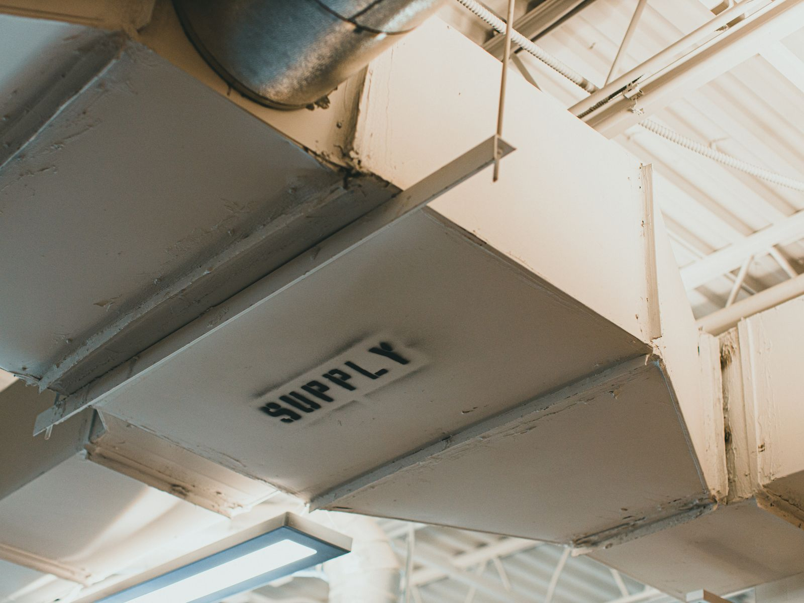

01 — CVC
Ventilation, climatisation & désenfumage
Du bilan frigorifique au dernier diffuseur : une installation dimensionnée sur les usages réels du bâtiment, pas sur un catalogue.
Tout part du calcul des déperditions en régime hivernal et du bilan frigorifique en régime estival, local par local. Le choix du système — centrale de traitement d'air, groupe d'eau glacée et ventilo-convecteurs, DRV — est ensuite argumenté en coût global, puis les réseaux sont dimensionnés en vitesse et en perte de charge, avec vérification des niveaux acoustiques aux bouches.
- Calcul des déperditions et bilan frigorifique, zone par zone
- Sélection des équipements : CTA double flux, groupes d'eau glacée, DRV, ventilo-convecteurs
- Débits d'air neuf réglementaires et récupération d'énergie sur l'air extrait
- Réseaux aérauliques et hydrauliques : sections, vitesses, pertes de charge
- Désenfumage naturel et mécanique : surfaces utiles, débits d'extraction, amenées d'air
- Synoptiques, schémas de principe, notes de calcul et CCTP
